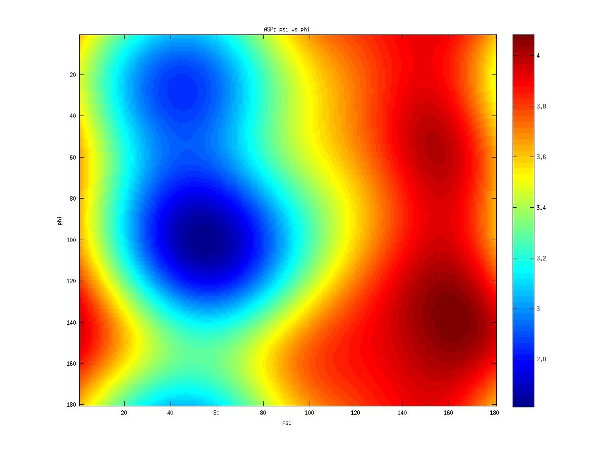
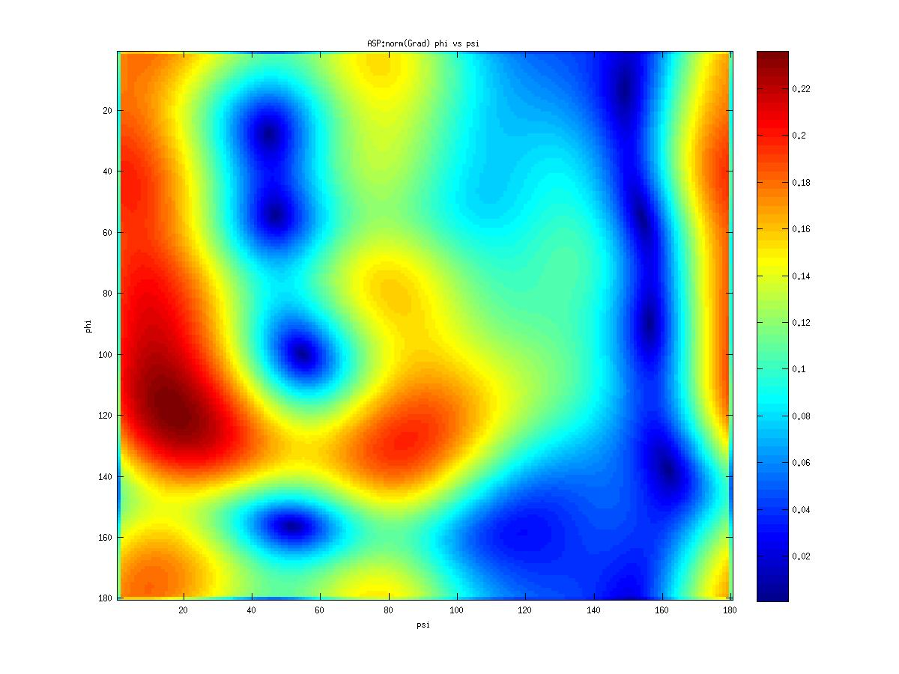
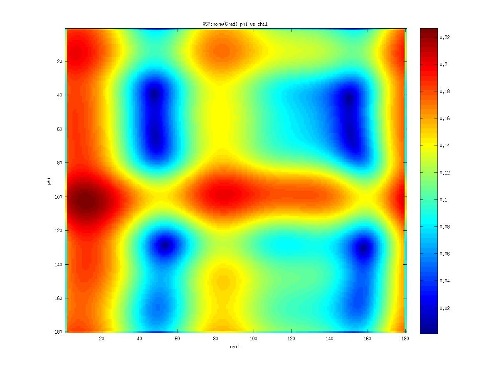
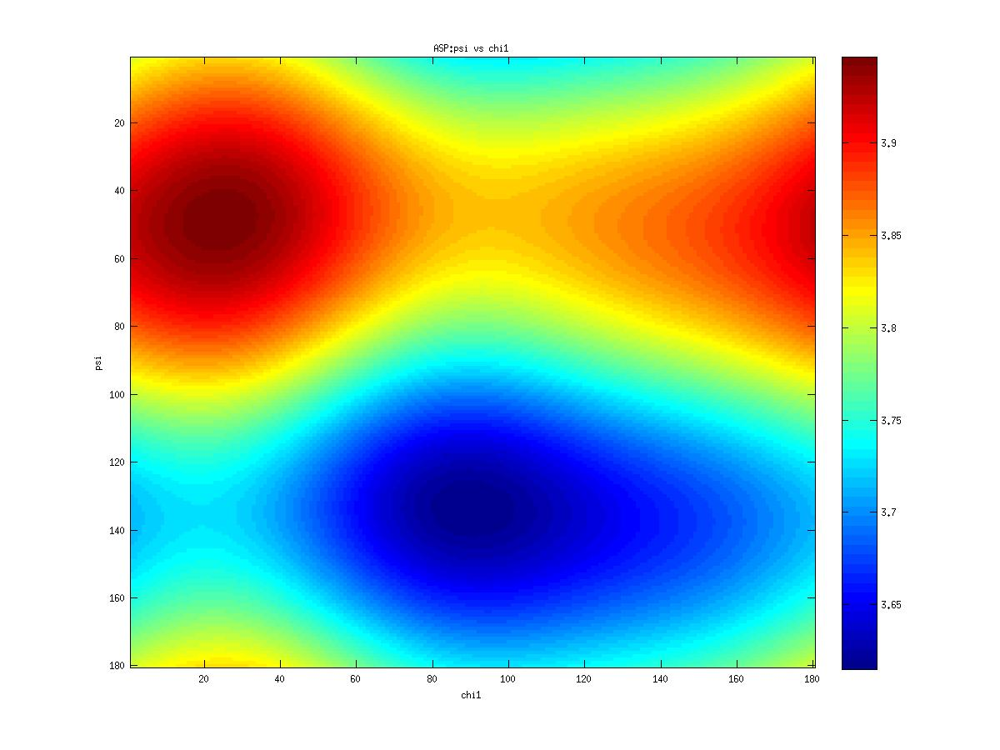
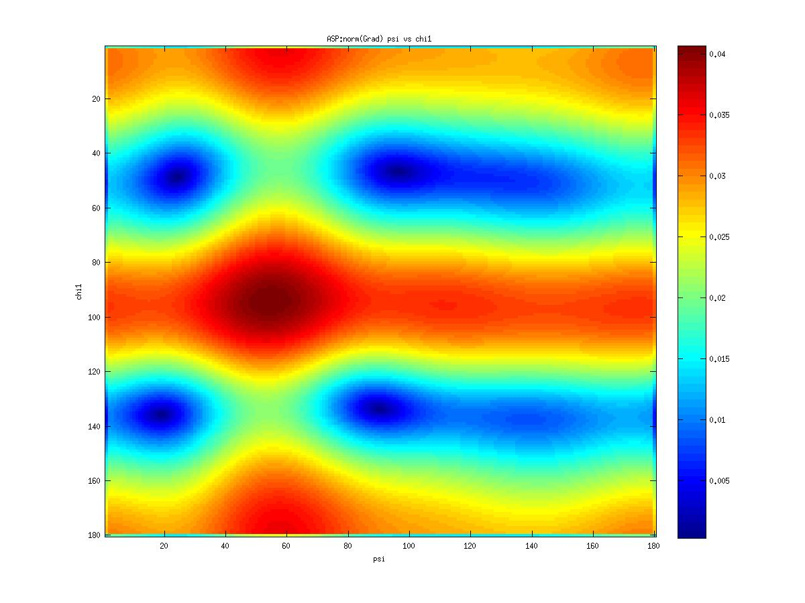
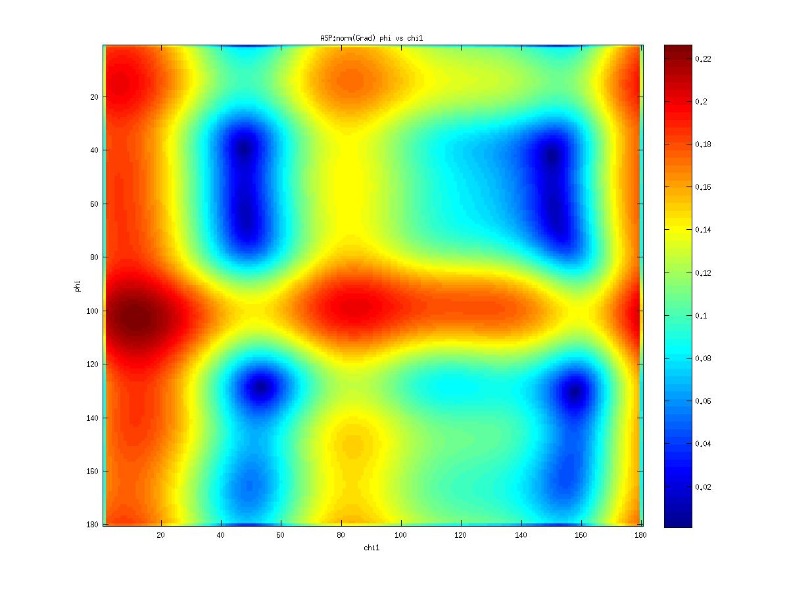
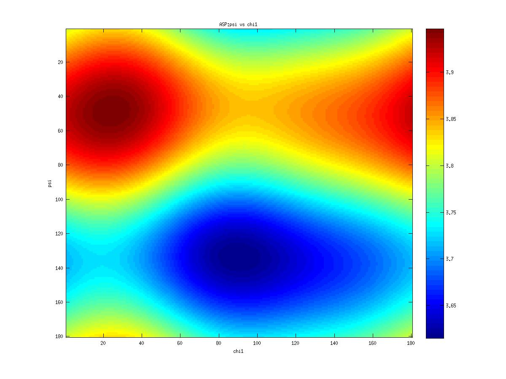
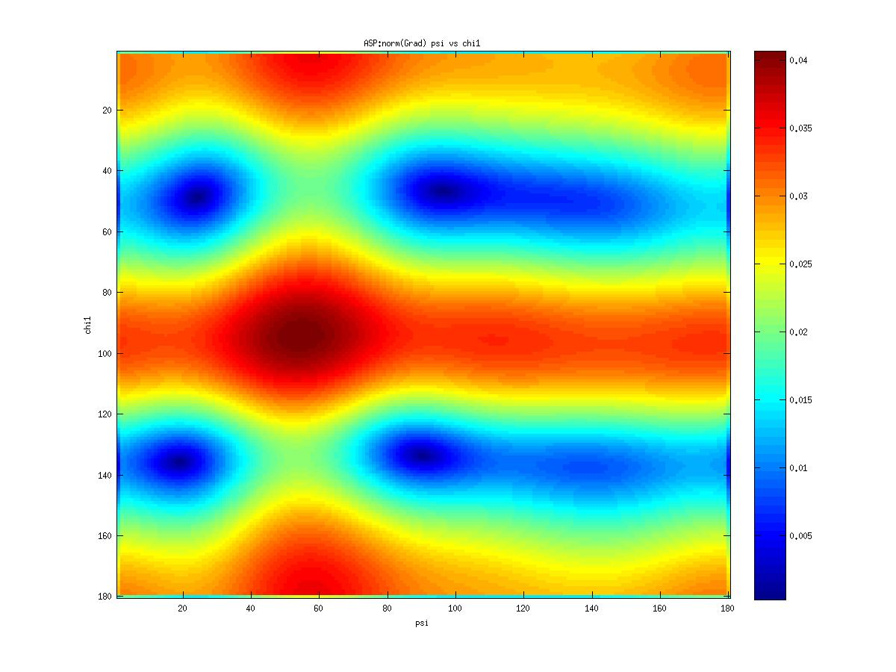
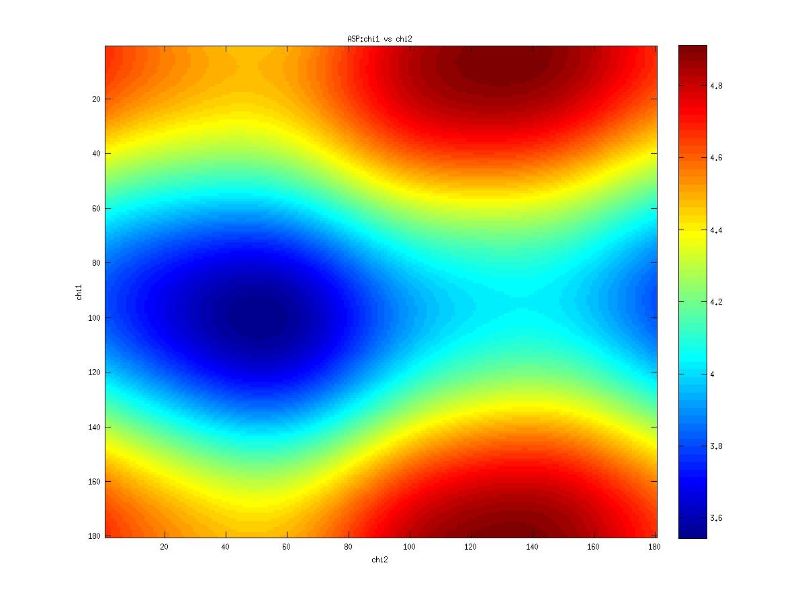
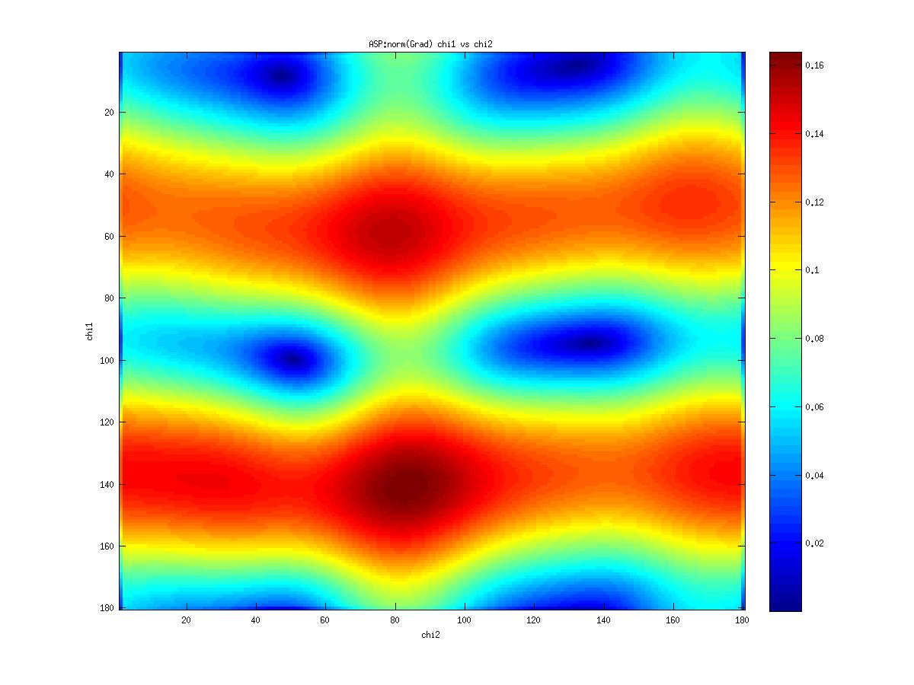

Amino ASP

Amino ASP
SAMPLE SIZE: 2525
| B-factor | |
|---|---|
| Mean | 23.23 |
| Median | 18.86 |
| Variance | 262.24 |
| Standard deviation | 16.19 |
| Skewness | 3.25 |
| Kurtosis | 24.75 |
| C-CA | N-CA | peptid plane | |
|---|---|---|---|
| Mean | 2.03 | 1.79 | 1.59 |
| Median | 1.53 | 1.46 | 1.33 |
| Variance | 1.36 | 0.74 | 0.46 |
| Standard deviation | 1.17 | 0.86 | 0.68 |
| Skewness | 2.08 | 2.75 | 2.95 |
| Kurtosis | 5.78 | 9.54 | 12.00 |
| corrcoef | 1.00 | 0.59 | 0.28 |
| corrcoef | 0.59 | 1.00 | 0.29 |
| corrcoef | 0.28 | 0.29 | 1.00 |
| PHI | PSI | |
|---|---|---|
| Mean | -72.81 | 28.08 |
| Median | -69.59 | 11.30 |
| R Length | 0.50 | 0.16 |
| Variance | 0.50 | 0.84 |
| Standard deviation | 1.00 | 1.30 |
| Standard deviation 0 | 1.17 | 1.92 |
| Skewness | -0.21 | -0.38 |
| Kurtosis | 0.35 | -0.16 |
Inferential Statistics for -
Tests for Uniformity
- Rayleigh Test, P = 0.00 0.00
- Omnibus Test, P = 0.00 0.00
- Rao Spacing Test, P = 0.50 0.50
- V Test (r = 0), P = 0.00 0.00
Measures of Association -
Circular-Circular Association
- Circ-circ corr phi-psi coeff/pval: -0.24 0.000
- Circ-line corr phi-C-CA coeff/pval: 0.63 0.000
- Circ-line corr phi-N-CA coeff/pval: 0.42 0.000
- Circ-line corr psi-C-CA coeff/pval: 0.31 0.000
- Circ-line corr psi-N-CA coeff/pval: 0.15 0.000
Statistics
| CHI_1 | |
|---|---|
| Mean resultant vector | 128.85 |
| Median | 128.85 |
| R Length | 0.02 |
| Variance | 0.98 |
| Standard deviation | 1.40 |
| Standard deviation 0 | 2.83 |
| Skewness | -0.01 |
| Kurtosis | -0.02 |
Inferential Statistics
Tests for Uniformity
- Rayleigh Test, P = 0.43
- Omnibus Test, P = 0.66
- Rao Spacing Test, P = 0.50
- Circ-circ corr phi-chi1 coeff/pval: 0.01 0.598
- Circ-circ corr psi-chi1 coeff/pval: -0.00 0.835
Statistics
| CHI_2 | |
|---|---|
| Mean resultant vector | -93.92 |
| Median | -93.92 |
| R Length | 0.34 |
| Variance | 0.66 |
| Standard deviation | 1.15 |
| Standard deviation 0 | 1.47 |
| Skewness | 0.13 |
| Kurtosis | 0.18 |
Inferential Statistics
Tests for Uniformity
- Rayleigh Test, P = 0.00
- Omnibus Test, P = 0.00
- Rao Spacing Test, P = 0.50
- Circ-circ corr phi-chi2 coeff/pval: 0.09 0.000
- Circ-circ corr psi-chi2 coeff/pval: -0.19 0.000
- Circ-circ corr chi1-chi2 coeff/pval: 0.01 0.580
Statistics
| CHI_3 | |
|---|---|
| Mean resultant vector | -12.63 |
| Median | -12.63 |
| R Length | 0.65 |
| Variance | 0.35 |
| Standard deviation | 0.83 |
| Standard deviation 0 | 0.92 |
| Skewness | -0.04 |
| Kurtosis | 0.52 |
Inferential Statistics
Tests for Uniformity
- Rayleigh Test, P = 0.00
- Omnibus Test, P = 0.00
- Rao Spacing Test, P = 0.50
- Circ-circ corr phi-chi3 coeff/pval: -0.03 0.089
- Circ-circ corr psi-chi3 coeff/pval: 0.03 0.106
- Circ-circ corr chi1-chi3 coeff/pval: -0.03 0.117
- Circ-circ corr chi2-chi3 coeff/pval: -0.30 0.000
&
 
 





 